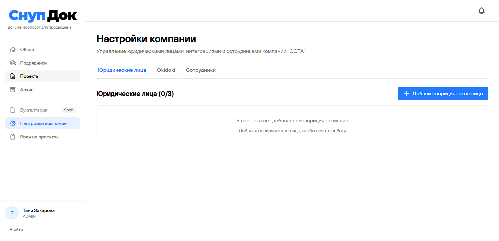
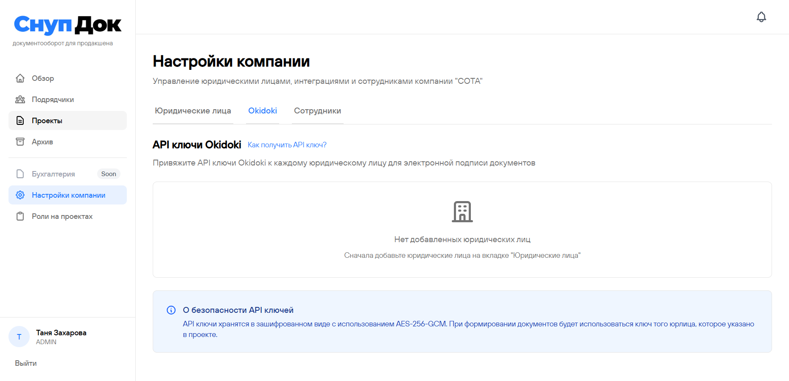
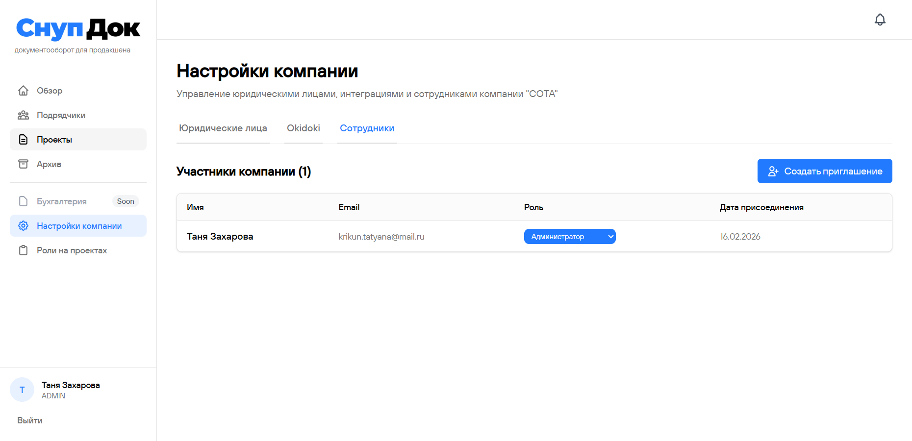
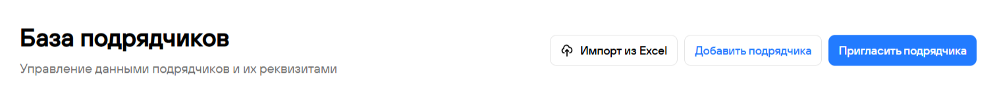
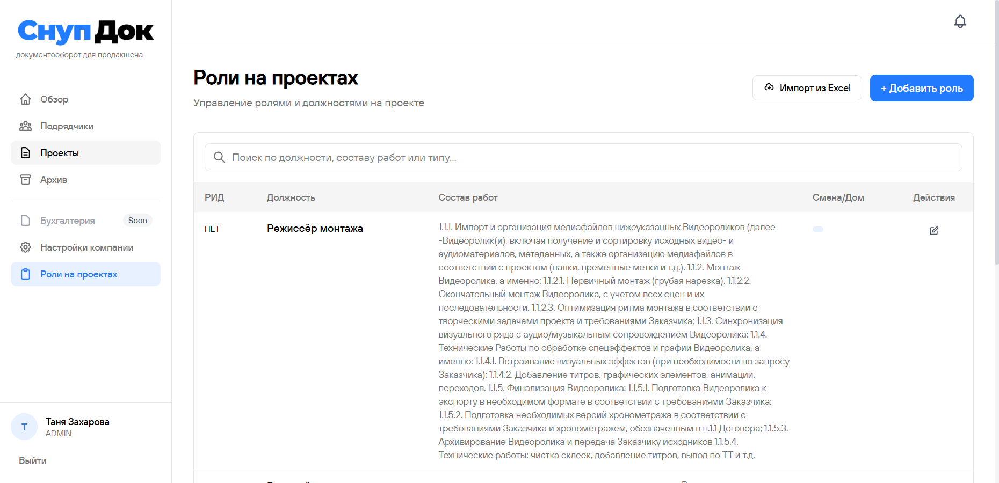
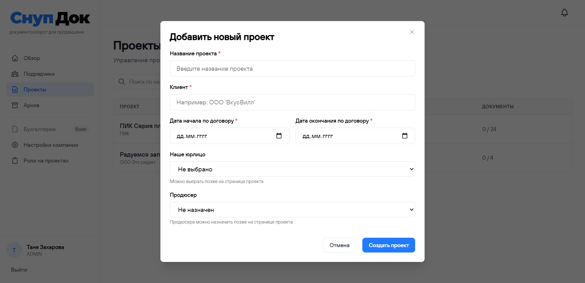

Старт работы в СнупДок
Чтобы начать работу, нужно пройти 7 шагов. Это занимает примерно 20–40 минут.
Добавьте юрлицо
В разделе Настройки компании → Юридические лица добавьте данные вашей компании. Без этого система не сможет формировать договоры.

Подключите OkiDoki
Зарегистрируйтесь в OkiDoki и подключите его к СнупДок в настройках. Инструкция по подключению доступна в разделе Настройки компании → Okidoki → Как получить API ключ?
Пополните баланс в OkiDoki для отправки документов на подпись.

Предоставьте доступ сотрудникам
Пригласите продюсеров и менеджеров в СнупДок через раздел Настройки компании → Сотрудники.

База подрядчиков
Наполните базу подрядчиков одним из способов:
- Импортируйте существующую базу из Excel
- Отправьте подрядчикам ссылку для самостоятельного заполнения реквизитов
- Добавьте подрядчиков вручную

Роли и составы работ
Для формирования договоров добавьте роли и укажите состав работ в разделе Роли на проектах. Можно:
- Использовать нашу готовую базу ролей (напишите нам для подключения)
- Загрузить свои роли и составы работ из таблицы или добавить вручную

Создайте первый проект
Добавьте проект и начните формировать договоры с подрядчиками.
